Production Flow 0.1.2
Native Factorio 2.1.23 captures. Balance and help are refreshed for Production Flow 0.1.2 on Space Age; unchanged Full Sankey/Focus examples are retained from 0.1.1. The stress map is generated with bundled Space Age mods.
Water inputs and uses
Steam condensation, selected-water consumption rates and the built-in question-mark help button.

Organized item groups
Shaded group headings, row and column dividers, vertical-only scrolling and an explicit Update list action.

Details within each row
Utilisation, net percentage and stock trend remain paired with their values.

Full Sankey on Nauvis
Needs more polish. Optional grouped view of measured production on the selected surface.

Fluid processing on Vulcanus
Full Sankey needs more polish. Condensation, liquefaction and connected fluid recipes.

A pinned petroleum chain
Full Sankey needs more polish. Highlight connected flows and dim unrelated branches.

Focus on water
Focus needs more polish. Upstream and downstream recipe connections.

Iron plate consumption
Uses show iron plates consumed per second, not the consumer product output.
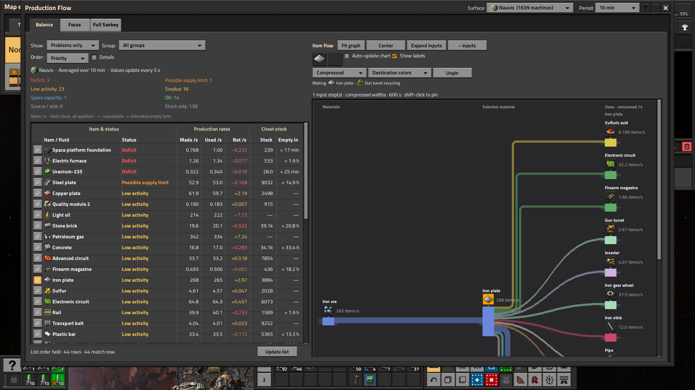
Steam inputs and uses
Steam consumed by condensation and liquefaction, with the material named in the Uses heading.
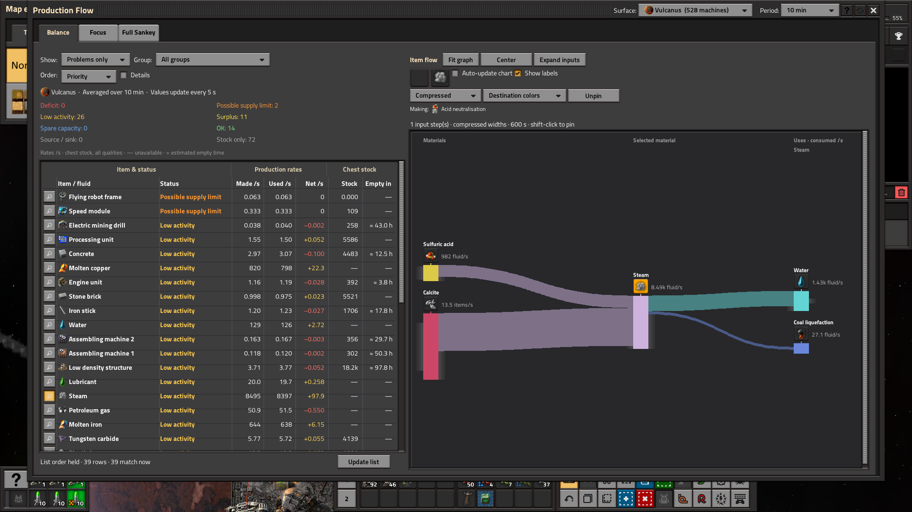
Local platform overview
Full Sankey and grouping need more polish. Grouping is optional; individual item/fluid names are the default.
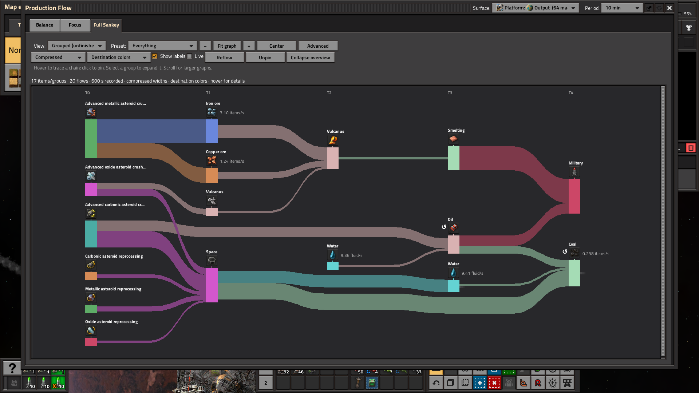
Copper chain with plain material names
Full Sankey needs more polish. Calcite, Copper ore, Molten copper and Copper plate are named individually.
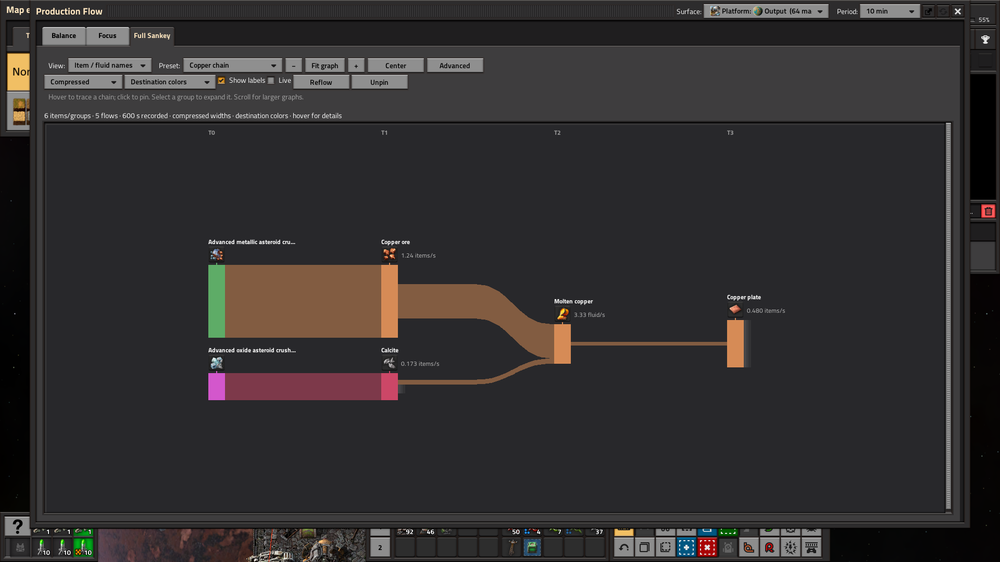
Copper casting in Balance
Plain Copper plate name with its recorded Casting copper recipe and copper consumption per consumer.
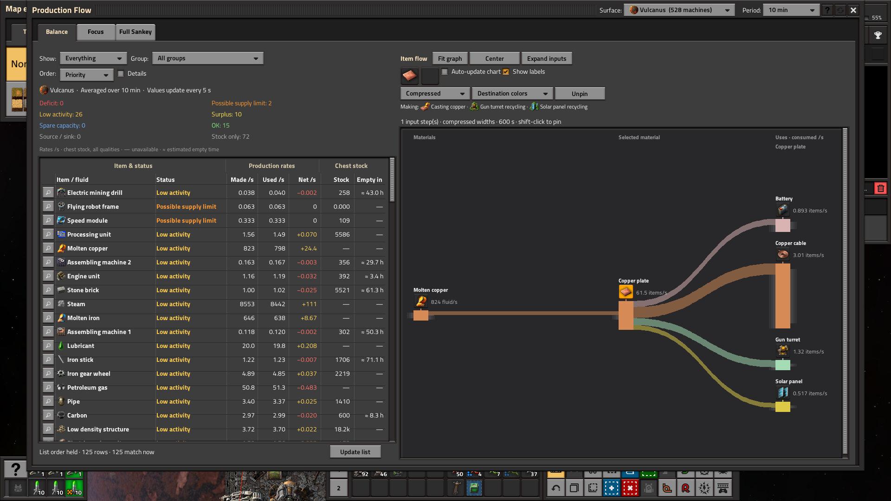
Physical chest stock
Nauvis steel now includes ordinary, provider, storage, requester and buffer chests; stock combines all qualities without network availability subtraction.
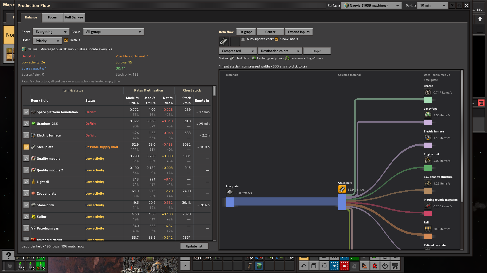
In-game help: Start here
Controls, stable list updates, material and recipe names, and unfinished features.
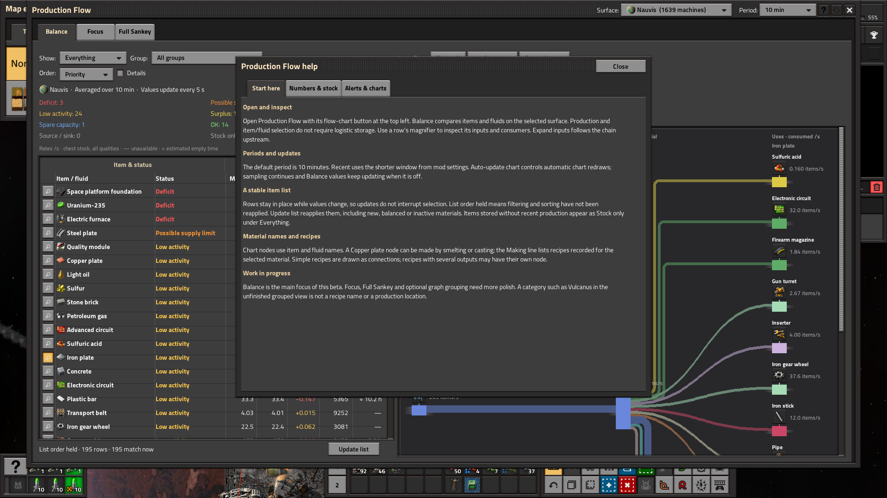
In-game help: Numbers & stock
History, measured rates, selected-material consumption, stored stock and estimates.
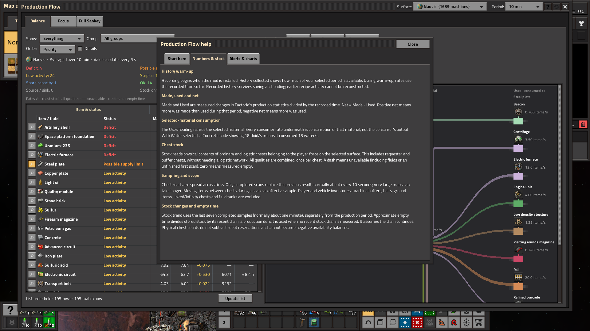
In-game help: Alerts & charts
Heuristic alerts, estimated utilisation, recipe links, widths, colors and scope.
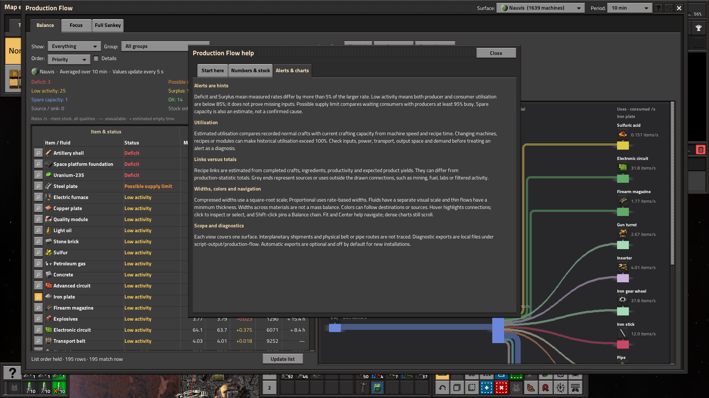
Fresh-install history warm-up
No prior history is invented. History collected shows the available time toward the selected 600 seconds.
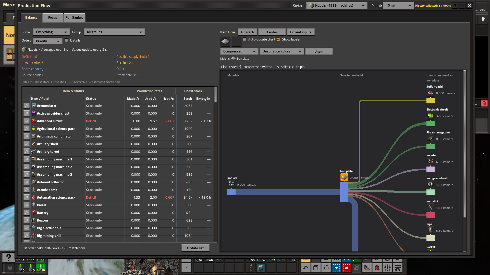
Recent averaging period
Recent (60 s) is separate from the Auto-update chart switch; the default period remains 10 minutes.
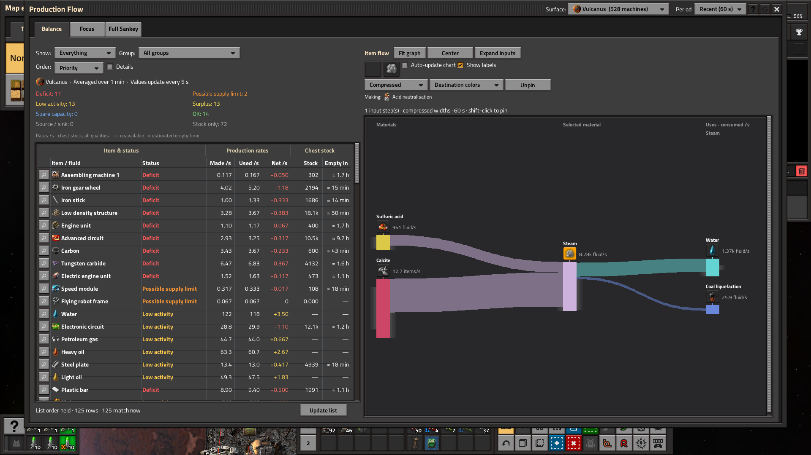
50,000-chest stress map
Six chest types, 2.4 million stacks and 210 item types, with fixed-seed randomized counts and qualities.
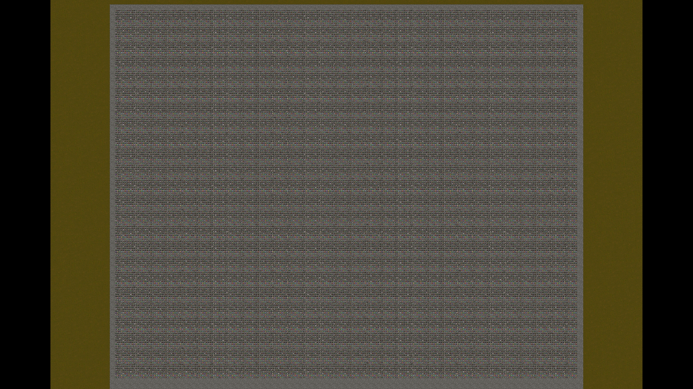
Stock without recent production
Everything lists 210 stored materials on a surface with zero crafting machines and no logistic network.
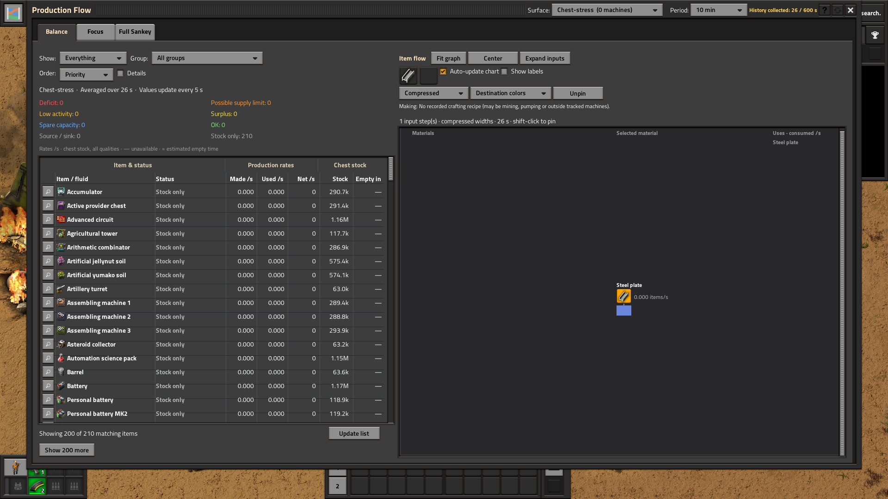
Randomized full inventory
One native steel-chest inventory with 48 item types, varied quantities and all five qualities, from the stress fixture.
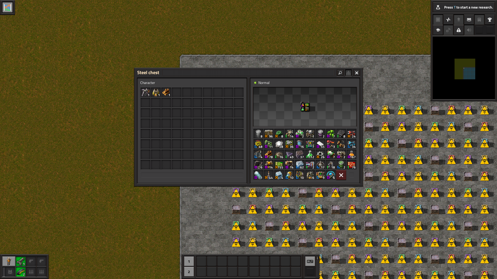